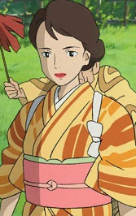
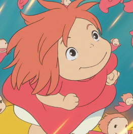
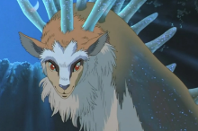

|
Apes |
After humans cut down the trees of the Cedar Forest, destroying their home, the apes began to believe that to become smarter and more powerful, they needed to eat humans. |
Princess Mononoke |
|
Arrietty |
A young and curious borrower, she is adventurous and enjoys collecting plants and exploring the garden. Although her parents warn her it is dangerous, she befriends a young 'bean' named Sho. |
The Secret World of Arrietty |
|
Asbel |
Asbel initially supported the Pejitians' plans to eliminate the Tolmekians, shooting down their airplanes and pursuing them. He was later rescued by Nausicaä, and in return, he saved her several times. Eventually, they became good friends. |
Nausicaä of the Valley of the Wind |
|
Ashitaka |
AAshitaka is peaceful but stern. He had long hair until he was told to leave the village, at which point he cut it off. He is not fond of fighting and tried to convince the villagers that hatred would blind them. When he left, he took San with him—she became his friend and eventually his lover. He is often accompanied by his loyal serow, Yakul. |
Princess Mononoke |
|
Boh |
Boh is Yubaba's child, sheltered from the world and raised to believe that the outside would make him sick. He behaves like a spoiled brat until Yubaba's sister, Zeniba, turns him into a mouse. As a mouse, Boh accompanies Chihiro on her quest to return Zeniba's gold seal and becomes her friend |
Spirited Away |
|
Calcifer |
Calcifer is a fire demon bound to Howl's heart. He is responsible for moving Howl's castle and protecting it during the war. Calcifer is both sparky and sarcastic, and he quickly warms up to Sophie. |
Howl's Moving Castle |
|
Capo |
Capo is the leader of the Mamma Aiuto and an enemy of Porco Rosso. He is loud and overbearing, with his main goal being to defeat Porco Rosso in combat. |
Porco Rosso |
|
Caproni |
Caproni is a famous Italian aeronautical engineer who inspires Jiro to become an airplane designer. He often appears in Jiro's dreams. He is based on Giovanni Battista Caproni, a real Italian aircraft designer. |
The Wind Rises |
|
Cat King/td>
| The Cat King is ruthless; he kidnaps Haru and takes her to the Cat Kingdom, where she is turned into a cat. He attempts to marry her, but she escapes and leads him into a fight with the Baron, where he is ultimately defeated |
The Cat Returns |
|
Cat Bus |
Catbus is a magical creature that Totoro, Mei, and Satsuki use for travel. When someone wants to board, he lowers his sides to let them in and has a female figure inside to assist. He often smiles like the heshire Cat |
My Neighbor Totoro |
|
Chibi & Chu Totoro |
Chu is 679 years old and carries a bag filled with acorns. Chibi is a mouse-like Totoro who is 109 years old. Both are servants of the Big Totoro |
My Neighbor Totoro |
|
Chihiro/Sen |
Chihiro stumbles upon the spirit world with her parents. When they are turned into pigs, she is forced to work in the bathhouse. She becomes friends with Haku, who helps keep her safe from Yubaba. When Chihiro signs a contract with Yubaba to work there, she also gives up her name and is renamed Sen—taken from a part of the characters in her Japanese name. Though initially shy and nervous, she gradually becomes brave and strong. |
Spirited Away |
|
Colonel Muska |
Colonel Muska is the main villain. He’s a government special agent who secretly wants to take control using the Aetherium crystal. He acts calm and polite on the outside, but he’s actually super manipulative and power-hungry. He’ll do whatever it takes to get what he wants, even if it means hurting others |
Castle in the Sky |
|
Dola |
Dola is after the treasures of Laputa, an ancient floating city. S he's the tough but kind-hearted leader of a gang of air pirates. At first, she seems greedy and bossy, but deep down she cares Her main enemy is Colonel Muska, who's way more ruthless and power-hungry. |
Castle in the Sky |
 |
Donald Curtis |
Donald Curtis is a cocky bounty hunter who teams up with some air pirates to try and take down Porco Rosso. He’s full of himself, loves showing off, and always wants to be the star of the show. He’s also got a huge crush on Gina and keeps talking about becoming president one day |
Porco Rosso |
|
Ferrari |
Ferrari is a major in the Regia Aeronautica and flies the red M.52. He’s got a calm, collected vibe and has some history with Porco from their military days. Even though he ends up betraying Italy for reasons that aren’t really clear, he still seems to respect Porco and understands him better than most. There’s definitely a sense that they go way back. |
Porco Rosso |
|
Fio Piccolo |
Fio Piccolo is a skilled engineer with a real passion for planes. She’s smart, confident, and doesn’t back down, even when faced with challenges. Throughout the story, she forms a close bond with Porco Rosso, caring about him more than he lets on. Despite his tough exterior, Fio’s warmth and determination get through to him, and she becomes a key part of his journey |
Porco Rosso |
|
Fujimoto |
Fujimoto in is a quirky, protective wizard and father, living under the sea. He used to be human and is really overprotective of his daughter, Ponyo, trying to keep her from becoming fully human. He can seem a bit harsh, but deep down, he just cares a lot about her and wants to keep her safe |
Ponyo |
|
Fukuo |
Fukuo is Osana’s husband, and he takes care of the baking at their bakery. He’s a man of few words, staying pretty quiet most of the time, but he’s super kind-hearted and warms up to Kiki and Jiji pretty quickly. He even makes Kiki her own sign for her delivery service. |
Kiki's Delivery Service |
|
Gina |
Gina is a close friend of Porco Rosso and owns the Hotel Adriano. She's kind, classy, and a talented singer. Even though she clearly cares about Porco, he keeps his distance, and their relationship stays more unspoken than romanticr. |
Porco Rosso |
|
Gonza |
Gonza is Lady Eboshi’s loud and loyal bodyguard. He’s tough, kinda hot-headed, and always ready to jump into a fight. He’s super loyal to Eboshi, even if he doesn’t always get what’s going on, and sometimes adds a bit of comic relief with his attitude. |
Howl's Moving Castle |
|
Granmamare |
Granmamare is Ponyo’s mom and a powerful sea goddess. She’s super calm, kind, and has this peaceful, magical vibe. Even though she’s really powerful, she’s gentle and totally trusts Ponyo and Sosuke to make the right choice |
Ponyo |
|
Haku |
Haku is a calm guy who helps Chihiro when she’s stuck in the spirit world. They actually knew each other when Chihiro was younger, though neither of them remembered at first. Haku works for Yubaba and possesses powers himself he secretly tries to protect Chihiro and help her out. He’s a river spirit, but he’s forgotten his true identity. They form a strong bond as the story goes on. |
Spirited Away |
|
Haru Yoshioka |
Haru is a sweet, kinda shy girl who saves a cat, only to find out he’s actually a prince. She gets taken to the Cat Kingdom by the Cat King, where they treat her like royalty. Things quickly get out of hand when they try to force her into marrying the prince. Overwhelmed and starting to turn into a cat herself, Haru eventually finds a way to escape with help from the Baron and learns to stand up for herself. By the end, she’s a lot more confident and trusts herself more |
The Cat Returns |
|
Hii-sama |
Hi-sama is the wise elder boar spirit in Princess Mononoke. She’s calm, collected, and totally respected by the younger boars. While she’s not as hot-headed as the others, she’s all about protecting the forest and making sure the younger boars, like Okkoto, don’t go too far in their anger toward humans. She's kind of the voice of reason in all the chaos. |
Princess Mononoke |
|
Himi |
Himi is a kind, calm character in The Boy and the Heron. She’s close to, Mahito, and helps guide him through some of the tough emotions he’s dealing with. Himi offers him comfort and wisdom when he’s feeling lost, and her presence brings a sense of peace to the story. While she’s gentle and quiet, she’s always there to help Mahito make sense of the complicated things around him. |
The Boy and the Heron |
|
Howl |
>Howl is a talented but moody wizard. He’s got a bit of a bad-boy reputation and can be charming one moment and distant the next. Even though he acts carefree and sometimes selfish, he’s really protective of Sophie and has a good heart. Howl’s tied to a powerful fire demon, Calcifer, who lives in his heart. The two are connected, with Calcifer powering Howl’s magic and his moving castle. Howl struggles with his magic, his identity, and his fears of losing control. But as the story goes on, he learns to open up and grow emotionally, especially in his relationship with Sophie |
Howl's Moving Castle |
|
Humbert Von Gikkingen/The Baron |
The Baron is a classy, charming cat figurine brought to life (first seen in Whispers of the Heart). He’s suave, polite, and acts like a total gentleman. Even though he’s mysterious, he’s also brave and always ready to help, especially when it comes to protecting Haru. He’s kind of the hero of the story, guiding Haru through the strange Cat Kingdom and helping her get back home. His calm, loyal personality and adventurous side make him a pretty cool character. |
The Cat Returns |
|
Jigo |
Jigo is a sly, opportunistic monk. He’s always looking for a way to make a profit, no matter what’s going on around him. He’s not evil, but he’ll do whatever it takes to get ahead, even if it means playing both sides. He’s clever, resourceful, and knows how to take advantage of the chaos happening in the world. |
Princess Mononoke |
|
Jiji |
Jiji is Kiki’s sarcastic and chatty black cat. He’s basically her sidekick and always ready with a snarky comment but totally loyal. Jiji’s a little nervous and cautious, which balances out Kiki’s boldness. He’s there to support her as she figures out life on her own. He also has some funny moments trying to pretend he’s a stuffed animal,he’s got a lot of personality for a little cat. |
Kiki's Delivery Service |
|
Jiro Horikoshi |
Jirō is a quiet, thoughtful guy who dreams of designing airplanes. He’s super passionate about his work and has been obsessed with flight since he was a kid. He’s kind and caring, especially with Naoko, the woman he loves. Even though he’s focused on building beautiful planes, he struggles with the fact that they’ll be used in war. He’s a mix of dreamer and realist. |
The Wind Rises |
|
Kamajii |
Kamaji is the grumpy-but-kind boiler man who runs the furnace in the bathhouse. He’s got super long arms to work all the levers and pipes, and he’s always surrounded by a bunch of tiny soot sprites that help carry coal. At first, he seems all business, but he’s actually a total softie. He helps Chihiro when she’s in trouble, lies to Yubaba to protect her, and trusts Haku’s judgment. The soot sprites are like his little crew, and together they keep the whole place running. |
Spirited Away |
|
Kanta |
Kanta is the shy, awkward boy who lives near Satsuki and Mei. He pretends to be tough and kind of rude, but he actually cares a lot—he just doesn’t know how to show it. He helps out their family in small ways, like lending an umbrella or passing along messages. Deep down, he’s a sweet kid with a good heart, even if he’s a little bad at talking to people. |
My Neighbor Totoro |
|
Kaya |
Kaya is a sweet, soft-spoken girl from Ashitaka’s village. She’s clearly close to him, and you can tell she’s sad when he has to leave. She’s not super talkative, but she shows her feelings in subtle ways, like giving him that little crystal dagger as a goodbye gift. She has a simple, traditional style and seems like the kind of person who stays calm even when things are tough.. |
Princess Mononoke |
|
Kayo Horikoshi |
Kayo is Jirō’s spunky little sister. She’s smart, blunt, and doesn’t hold back,especially when she thinks Jirō’s being too wrapped up in his work. Even though she teases him, she clearly cares and just wants him to be more grounded. |
The Wind Rises |
|
Kiki |
Kiki is a witch figuring things out on her own. She doesn’t have a ton of magic, but she’s got a broom and a sassy cat named Jiji, and that’s enough to get by. She ends up in a new town where she starts a delivery service, and she gets taken in by Osono, the kind bakery owner. Osono’s super kind and offers her a place to stay and a job at the bakery, giving Kiki a chance to get on her feet. Kiki’s magic is more about the little things— flying around town, helping people, and figuring out who she is. |
Kiki's Delivery Service |
|
Kiro Honjo |
Kiro is Jirō’s laid-back buddy who’s pretty much always smoking and cracking jokes. He’s got that chill attitude, never in a rush, just taking things as they come. He’s cool with Jirō getting lost in his work but also knows when to tell him to slow down. Kiro’s the type of guy who’ll remind Jirō to take a breather and not get too wrapped up in everything. |
The Wind Rises |
|
Kiyoshi Yokokawa |
Kiyoshi Yokokawa is a kind, quiet man who helps out Seita and Setsuko after their lives get turned upside down. He’s a family friend and, even though he’s not around a lot, he tries to look out for them when he can. He’s not super expressive, but you can tell he feels bad for their situation and wishes he could do more. He's more of a background character, but his presence shows that, despite everything, there are still some people who care. |
Grave of the Fireflies |
|
Kodama |
Kodama are small, spirit-like beings from Princess Mononoke that inhabit the forest. They have pale faces, large dark eyes, and a serene, otherworldly presence. Often seen silently moving among the trees or in the mist, they embody the spirit of the forest. Their quiet nature and mysterious appearance make them feel like the guardians of the forest, watching over the land with a peaceful, almost magical energy. |
Princess Mononoke |
|
Kumiko |
Kumiko is one of the kids at Sōsuke’s school and becomes friends with Ponyo. She’s a bit quiet and sensitive, not as bold as some of the other kids, but she’s kind and thoughtful. At first, she’s a little unsure about Ponyo’s weird behavior, but she gets used to her quickly. She doesn’t say much, but she adds a gentle, sweet vibe to the group. |
Ponyo |
 |
Kurotawa |
Kurotawa is the sneaky, sarcastic right-hand man to Princess Kushana. He’s got this sly, always-scheming vibe, but he’s not as ruthless as some of the other military folks. He plays it smart, often watching from the sidelines and making clever comments while others rush in. Even though he acts like he’s just following orders, he clearly thinks for himself and isn’t above bending the rules if it suits him. Kind of a wildcard, but more sharp than evil. |
Nausicaä of the Valley of the Wind |
|
Kushana |
Kushana is a fierce, no-nonsense commander who’s always in control. She’s smart, intense, and clearly carries some scars from the past—both physical and emotional. Kurotawa, her snarky second-in-command, tags along with his dry humor and laid-back attitude, but he knows she’s the one calling the shots. They’ve got a sharp back-and-forth that somehow works, balancing her intensity with his sly charm. Even if she seems cold, there’s more going on under the surface |
Nausicaä of the Valley of the Wind |
|
Lady Eboshi |
Lady Eboshi is a tough, no-nonsense leader who runs Irontown. She’s all about progress, even if it means going to war with the forest. She’s smart, determined, and doesn’t let anyone, especially men or the gods—tell her what to do. While she seems like a villain, she actually does a lot of good for her people, like taking care of lepers and empowering women. She’s definitely got a complicated side, mixing ambition with a bit of care for those she leads |
Princess Mononoke |
|
Lily |
Lily is a cat that lives above the shop that Kiki works at for Osonoa. Jiji is instantly smitten by her and starts to spend some of his time with her. |
Kiki's Delivery Service |
|
Lin |
Lin works at the bathhouse and, right away, ends up looking out for Chihiro, who she warms up to fast. They quickly become good friends. Lin’s tough, a little edgy, and doesn’t take crap from anyone. She dreams of getting away from the bathhouse and hopping on a train to explore, but since she doesn’t have a ticket, she’s kind of stuck. Even though she’s all about looking out for herself, she’s got a soft spot for Chihiro and is pretty protective of her |
Spirited Away |
|
Lisa |
Lisa is Sosuke’s mom, and she’s super caring and always looking out for him. She works as a nurse, so she’s busy, but she makes sure to juggle everything and be there for her son. Lisa’s got a warm, down-to-earth vibe and handles things with a mix of strength and kindness. She’s playful too and definitely supports Sosuke in his wild adventures. |
Ponyo |
|
Madame Suliman |
Madam Suliman is the king’s royal sorcerer. She has long been after Howl and his powers, wanting to bend him to her will and use him as a weapon in war. She is smart and tricky, using these skills to also curse the Witch of the Waste. |
Howl's Moving Castle |
|
Mahito Maki |
Mahito, is a quiet, introspective boy who’s struggling to cope with the recent death of his mother. He’s going through a tough time, feeling lost and unsure of how to navigate life after such a huge loss. He tends to be in his own head a lot, questioning things and trying to figure out what everything means. As he embarks on his journey, Mahito not only faces the emotional weight of grief but also encounters strange, magical events that pull him into a world full of wonder and mystery. Through these experiences, he begins to grow and understand more about himself, life, and the connections that tie everything together. His story is about healing, self-discovery, and finding a sense of purpose in a world that feels a bit overwhelming at times. |
Boy and the Heron |
|
Marco Pagot |
Marco Pagot in Porco Rosso is a tough, cynical ex-fighter pilot who now works as a bounty hunter, flying around the Adriatic Sea. He’s been cursed to look like a pig, which he's not thrilled about, but he’s learned to live with it. Marco’s got a dry wit and tends to do things his own way, often working alone. He doesn't show much emotion, but there’s more to him than just the gruff exterior,he’s got a strong sense of honor and a bit of vulnerability that comes through when you least expect it. Despite his complicated past, Marco handles it all with a quiet kind of dignity, sticking to his guns and doing what he knows best: flying and taking down bounties. |
Porco Rosso |
|
Markl |
Markl is Howl's young apprentice who helps run things while Howl’s off being dramatic. He lives in the castle, handles visitors with a fake beard and serious voice, and tries to act older than he is. Even though he’s just a kid, he’s smart, responsible, and clearly used to Howl’s chaos. He’s loyal, quick to adapt, and warms up to Sophie fast,like a little brother suddenly part of a very strange, magical family |
Howl's Moving Castle |
|
Mei Kusakabe |
Mei’s the younger sister and is super curious, loud, and always on the move. She’s got that wild little kid energy, chasing bugs, yelling when she’s excited, and following weird creatures without a second thought. She looks up to her big sister but definitely wants to do her own thing. She’s stubborn, funny, and not afraid to throw a tantrum or burst into giggles a second later. Just a pure, chaotic little ball of emotions. |
My Neighbor Totoro |
|
Moon |
Moon is a round, laid-back cat who technically belongs to Shirō Nishi, but he’s more of a free spirit than a pet. He’s always drifting from one house to the next, often called by different names by the people he visits. He’s a bit of a neighborhood wanderer, with no real interest in staying in one place for too long. Whether he's lounging on a windowsill or roaming the streets, Moon does what he wants, when he wants, like a true street cat. |
Whisper of the Heart |
|
Moro |
Moro is a powerful wolf spirit known for her fierce and commanding presence. With her striking white fur and piercing eyes, she embodies the strength and wisdom of the forest. While she can appear intimidating, especially given her role as a protector of nature, Moro has a deep and caring bond with San, the girl she raised. She acts as a mother figure to San, fiercely protecting her and guiding her through the challenges they face. Moro’s relationship with San is central to her character, as she not only defends the forest but also deeply cares for its future, represented through her connection to the young human raised among wolves |
Princess Mononoke |
|
Mr. Kusakabe |
Mr. Kusakabe is a gentle and supportive father. He remains calm and patient, even in challenging situations, offering comfort and stability to his daughters, Mei and Satsuki. While focused on his work, he always prioritizes his family, embodying a thoughtful and caring presence. |
My Neighbor Totoro |
|
Mr.Piccolo |
Mr. Piccolo is a gruff, no-nonsense mechanic who runs a workshop, but he has a soft spot for his daughter, Gina. He’s protective of her and, even though he can come off as tough, he clearly cares about her well-being. Their relationship shows a quieter, more affectionate side of him. He’s supportive in his own way, especially when it comes to her connection with Porco, even if he doesn’t say much about it. His loyalty to both Gina and Porco is unwavering, even if it's often expressed through actions rather than words. |
Porco Rosso |
|
Mrs. Yokokawa |
Mrs. Yokokawa is a kind woman who briefly takes Seita and Setsuko in after their home is destroyed. She’s family, so she tries to help, but her own life is tough too. As the kids' situation gets worse, she starts getting frustrated with Seita, especially since he doesn’t want to accept help and tries to handle everything on his own. Even though she’s not always able to give them what they need, her care for them shows through, even if it's complicated by the struggles of the time. |
Grave of the Fireflies |
|
Mrs.Kusakabe |
Mrs. Kusakabe is a kind and gentle woman. She's warm- hearted and caring, always looking out for her two daughters, Satsuki and Mei, as they adjust to their new life in the countryside. You can see that she's a bit of a calming presence in the family, with a gentle, nurturing way about her. She has a soft and supportive role, making sure everything runs smoothly at home while also being understanding of her children's emotions, especially during the more difficult moments. |
My Neighbor Totoro |
 |
Muta |
Muta is a grumpy, plump cat with a bit of a tough exterior, but he’s actually a softie at heart. In Whisper of the Heart, he’s more of a lazy, sarcastic presence, but in The Cat Returns, his character is revealed to be the "Moon," a larger-than-life, confident version of himself. He still carries that tough attitude, but with a bit more charm and mystery. |
The Cat Returns |
|
Naoko Satomi |
Naoko meets Jiro during an earthquake, when he helps her and her maid. They don’t meet again until years later, when they fall in love. She suffers from tuberculosis, which eventually takes her, but during her illness, both her family and Jiro care for and love her through it. Jiro discovers her painting, and it is through this that they reunite after years apart. |
The Wind Rises |
|  |
Natsuko |
Natsuko is Mahito's aunt. She and his father get together years after the death of his mother, and Natsuko becomes pregnant. One day, she goes missing, and Mahito sets out to find her and his mother. |
Boy and the Heron |
|
Nausicaa |
Nausicaä is a brave and compassionate princess with a deep connection to nature. She’s got this incredible ability to understand the creatures of the Toxic Jungle, which most people fear. Instead of just fighting, she’s always trying to find peaceful solutions, even when things seem hopeless. She’s smart, resourceful, and fearless in the face of danger, willing to risk her own safety to protect others and the environment. Her strong sense of responsibility and determination make her a natural leader, and she’s driven by a desire to heal the world around her, even if it means challenging the people in power |
Nausicaa of the Valley of the Wind |
|
Niya |
Niya appears at the beginning of the movie as Shosuke's pet cat. He initially chases Arrietty, showing his natural hunting instincts, but over time, he warms up to her. Despite his initial pursuit, he ends up becoming a more curious and friendly companion to Arrietty, |
The Secret World of Arrietty |
|
No-Face |
No-Face is a spirit drawn to Sen (Chihiro) because she shows him kindness and doesn't react to him with fear or greed like others do. When he first meets her, he’s lonely and unsure, but Sen treats him without judgment, which creates a bond between them. Unlike the others who get caught up in their own desires, Sen’s pure, selfless nature calms No-Face and keeps him from spiraling into chaos. She doesn’t try to take anything from him, which contrasts with how others have treated him, and it’s this connection that helps No-Face change. |
Spirited Away |
|
Okkotonushi |
Okkotonushi, the Boar God, is a massive, angry creature.He used to protect the forest, but after getting cursed by a bullet, he’s consumed by rage and wants revenge on humans, especially those from Iron Town. His anger makes him more violent and out of control, but there’s also a tragic side to him. He’s battling the curse and the pain of what he’s become. |
Princess Mononoke |
|
Osono |
Osono is the kind-hearted, no-nonsense owner of the bakery. She’s a motherly figure who takes Kiki in when she first arrives in the city, offering her a place to stay and a job at her bakery. Osono is warm and supportive, but also practical and independent. She’s always looking out for Kiki, giving her advice when needed but allowing her the space to grow and find her way. With her calm demeanor and caring nature, Osono becomes a key figure in Kiki’s journey of self-discovery. |
Kiki's Delivery Service |
|
Pazu |
Pazu is a determined, big-hearted kid. He works as a mechanic and dreams of adventure, especially finding the legendary floating city, Laputa. When he meets Sheeta, he’s quick to help and sticks by her no matter what. He’s brave, a little stubborn, and always ready to stand up for what’s right. |
Castle in the Sky |
|
Pod |
Pod is Arrietty’s dad, he’s a quiet, serious Borrower who’s really good at sneaking around and collecting supplies from the human house. He doesn’t talk much, but he’s super protective and clearly cares a lot about his family. Pod’s calm, tough, and always watching out to make sure Arrietty stays safe. |
The Secret World of Arrietty< /td>
|
|  |
Ponyo |
Ponyo is a fun, curious little goldfish who magically turns into a human girl. She’s full of energy, super headstrong, and totally fascinated by the human world—especially by Sosuke, the boy she befriends. Ponyo acts on impulse and doesn’t always understand the consequences, but her heart is in the right place. She brings a lot of chaos and magic with her, but also a lot of love and joy. |
Ponyo |
|
Ponyo’s Sisters |
Ponyo’s sisters are tiny, magical fish who live with her in the ocean. They don’t speak much, but they’re playful, curious, and always swimming around in a big, shimmering group. They’re not as independent as Ponyo, but they clearly care about her and follow her lead. Later in the film, they help her out and even grow a bit more human-like thanks to their father’s magic. They add a fun, whimsical vibe to the underwater scenes. |
Ponyo |
|
Prince Lune |
Prince Lune is a sweet, well-mannered cat from The Cat Returns. He’s way more chill and respectful than the rest of the Cat Kingdom, especially his dad. Lune doesn’t want to force anyone into anything and just wants to do what’s right.He leaves a good impression with his calm vibe and kind heart. |
The Cat Returns |
|
Ryoko Matsuzaki |
Ryōko Matsuzaki is a strong, independent woman. She’s the widow of Yūichirō Sawamura and the mother of Umi, Sora, and Riku. A doctor who studied medicine in America, she now lives in Matsuzaki Manor with her kids. Ryōko had a bit of a rocky relationship with her parents when she married a sailor, which caused some tension, but she’s always been headstrong and determined to live life on her terms. Despite her past struggles, she’s a loving mom, balancing her career and family while staying true to her values. |
From Up on Poppy Hill |
|
Sachiko Hirokoji |
Sachiko Hirokōji is quiet, artsy college student in her 30s who lives at Coquelicot Manor with the main character, Umi. Sachiko’s usually seen in glasses, paint-stained clothes, and working on her art late into the night. She’s gentle, kind, and adds a cozy, creative vibe to the house. Her painting of the hill—even with Umi’s signal flags—shows how much she notices the little things. |
From Up on Poppy Hill |
|
San |
San, or Princess Mononoke, is the wild, fearless girl raised by wolves. She’s all about protecting the forest and its spirits, and totally rejects her human side. Dressed in fur, with red war paint and a wolf mask, she’ll go head-to-head with anyone threatening nature—especially humans from Iron Town. She's tough, angry, and super loyal to the wolf goddess Moro, who raised her like her own daughter.
Even though San acts like she hates all humans, she’s not heartless. Her connection with Ashitaka, a human who treats the forest with respect, makes her start to question things. She’s caught between two worlds—human and nature—and while she doesn’t fully belong to either, she fights to protect what she loves. |
Princess Mononoke |
|
Seiji Amasawa |
Seiji Amasawa is the thoughtful, determined boy. At first, he comes off as a bit of a mystery—quiet, confident, and always somehow one step ahead of Shizuku. He’s super passionate about making violins and even plans to study in Italy to become a master craftsman. Though he teases Shizuku early on, it’s clear he respects her creativity and drive. Seiji isn’t loud or flashy, but he’s got this calm intensity and a strong sense of purpose. His ambition ends up inspiring Shizuku to find her own path, and their relationship slowly grows into something honest, encouraging, and genuinely sweet |
Whisper of the Heart |
|
Seita Yokokawa |
Seita Yokokawa is the teenage brother and after losing his mom in a WWII air raid, he’s left to take care of his little sister, Setsuko, on his own. He’s brave and loves her deeply, but he’s still just a kid himself—trying to survive with no real support.He’s proud and tries to handle everything without asking for help, which sadly leads to tragedy. His story is heartbreaking, showing how war can destroy even the most innocent lives. |
Grave of the Fireflies |
|
Seita’s Aunt |
Seita’s aunt is cold and harsh. She lets Seita and Setsuko stay with her at first, but quickly gets fed up, especially as food runs low. She nags Seita for not working and makes them feel like a burden, which pushes them to leave.She’s not a villain, just someone hardened by war—bitter, tired, and focused on survival. Her attitude shows how war can make even family turn cold. |
Grave of the Fireflies |
|
Setsuko Yokokawa |
Setsuko Yokokawa is Seita’s adorable 4-year-old sister. She’s sweet, curious, and totally trusts her brother, even when everything around them is falling apart. She tries to stay playful and happy, but the war takes a huge toll on her.Her story is super emotional,she represents the innocence that gets lost in war. |
Grave of the Fireflies |
|
Sheeta |
Sheeta is the kind, brave girl.She’s got a mysterious crystal tied to the lost island of Laputa, which puts her on the run from pirates and shady government guys. Even though she seems quiet, she’s smart and strong, and she stands up for what’s right.She and Pazu make a solid team and go through a lot together. |
Castle in the Sky |
|
Shiro Nishi |
Shiro Nishi is Seiji’s uncle and the owner of the cozy antique shop. He’s a kind, wise old man who quietly encourages Shizuku’s creativity and helps her believe in herself. He has a deep love for music, stories, and old treasures—especially the Baron statue, which has its own bittersweet backstory.He’s like a gentle mentor figure. |
Whisper of the Heart |
|  |
Shishi-gami |
The Shishi-gami is the big forest spirit.It looks like a deer with a human face and turns into the giant Night Walker at night. It’s super powerful—can give life or take it away instantly.It doesn’t talk or pick sides, just keeps nature in balance. When humans mess with it, things go really bad. |
Princess Mononoke |
|
Shizuku Tsukishima |
Shizuku Tsukishima is a curious, book-loving teen trying to figure out what she wants to do with her life. After meeting Seiji—a focused, violin-making guy who totally inspires her—she decides to follow her own dream of becoming a writer.At first, they butt heads a little, but their relationship grows into something really sweet and supportive. Seiji pushes her to believe in herself, and she does the same for him. It’s a quiet, heartfelt love story about chasing your dreams together. |
Whisper of the Heart |
|
Sho |
Shō is a quiet, thoughtful boy. He’s a human who discovers Arrietty, a tiny “Borrower” living under the floorboards of his aunt’s house. Even though he’s sick and staying there to rest, he becomes fascinated by her world.Shō is gentle and kind, and even though he's dealing with his own health issues, he really cares about Arrietty’s safety. Their connection is calm and bittersweet—he knows they come from different worlds, but he still wants to protect her. |
The Secret World of Arrietty |
|
Shoichi Maki |
Shoichi Maki is Mahito’s dad. After his wife dies in a Tokyo air raid, he quickly marries her sister, Natsuko, and moves with Mahito to the countryside. He runs an air munitions factory and is mostly focused on work.He comes off as distant, which causes tension with Mahito, who's still grieving. Shoichi’s not cold— he’s just trying to hold things together during a tough time. |
Boy and the Heron |
|
Shun Kazama |
Shun Kazama is the smart, confident guy. He’s big on saving the school clubhouse and meets Umi while working on it. They get close fast, but things get complicated when Shun starts digging into his past and finds out he might be adopted.He’s caring, determined, and shares a sweet, supportive bond with Umi. |
From up Poppy Hill |
|
Soot Sprites |
Soot Sprites (Susuwatari) work in the boiler room of the bathhouse, helping Kamaji by carrying little lumps of coal into the furnace. They’re small, fuzzy black balls with skinny little arms and big eyes, and they scurry around like bugs.They’re super cute and hardworking, but also a bit mischievous. When Chihiro helps one of them with its coal, the others pretend to get hurt just to get out of work. Kamaji scolds them, but you can tell they’re harmless and playful. They add a fun, magical vibe to the bathhouse world. |
Spirited Away |
|
Sophie |
Sophie starts out as a quiet, hardworking hat maker who doesn’t think she’s anything special. Then she gets cursed by the Witch of the Waste and suddenly turns into a 90-year-old woman. But instead of giving up, Sophie actually becomes braver and more outspoken. Weirdly enough, being old kind of sets her free.She ends up in Howl’s magical, chaotic moving castle and slowly becomes the heart of the place—cooking, cleaning, and calling people out when they need it. She’s stubborn, kind, and way stronger than she realizes. As she and Howl spend more time together, they start falling for each other, even if they’re both too proud to admit it at first. |
Howl's Moving Castle |
|
Sora Matsuzaki |
Sora Matsuzaki is super responsible—taking care of her siblings, running the house, and raising flags every morning for her dad who died in the war.She meets Shun while helping save the school’s old clubhouse, and they grow close fast. Things get complicated when they uncover some family secrets, but Sora handles it all with calm and heart. |
From up Poppy Hill
|
|
Sosuke |
Sōsuke is a sweet, kind-hearted little boy. He’s only five, but super brave and caring—especially when it comes to Ponyo, the magical goldfish-girl he finds and protects.He treats Ponyo with love and respect, no matter how weird things get. Even when the ocean goes wild and his town floods, Sōsuke stays calm and focused on keeping Ponyo safe. He’s loyal, gentle, and wise beyond his years—a perfect match for her wild energy. |
Ponyo |
|
Spiller |
Spiller is a quiet, mysterious wild boy.He’s another Borrower like Arrietty and her family, but he lives off the land and knows how to survive on his own in the wild.He doesn’t talk much, but he’s brave, resourceful, and always shows up when it counts—especially when Arrietty and her family need help. With his face paint, bow and arrows, and stealthy moves, he’s got major survival skills and a cool, lone-wolf vibe. |
The Secret World of Arrietty |
|
Susuwatari |
Soot Sprites (aka Susuwatari) are the tiny, black, fuzzy creatures that appear in My Neighbor Totoro and Spirited Away. They look like little dust balls with big eyes and bounce or float around in old, quiet places.In Totoro, they live in the abandoned house before the girls move in. |
My Neighbor Totoro |
|
Tatari-gami |
Tatari-gami are cursed spirits usually former animal gods twisted by rage and pain. They look like huge boars covered in wriggling, black tendrils that spread death and corruption. |
Princess Mononoke |
|
Teto |
Teto is Nausicaä’s adorable little fox-squirrel. At first, he’s wild and bites her, but he quickly warms up and becomes super loyal.He’s small, fluffy, and usually perched on Nausicaä’s shoulder, sticking with her through all the danger. Teto doesn’t talk, but he’s brave, smart, and totally devoted—a cute but fierce little companion. |
Nausicaa of the Valley of the Wind |
|
The Gray Heron |
The Gray Heron starts off as a strange, almost creepy bird that follows Mahito around after he moves to the countryside. At first, it seems like just a weird, annoying presence—but it turns out the heron is actually a magical being (and also kind of a jerk at times).He can talk, shapeshift, and leads Mahito into a mysterious, otherworldly journey. Though he’s tricky and sarcastic, he ends up helping Mahito in unexpected way |
Boy and the Heron |
|
Toki |
Toki is a tough, no-nonsense woman. She lives in Iron Town and works with the other women operating the bellows for the forge. She’s sharp-tongued, funny, and doesn’t take crap from anyone—including her husband, who’s often sick or injured.Even though she jokes around a lot, Toki’s brave and fiercely loyal. She’s one of the few characters who brings some humor and warmth to the gritty world of Iron Town, showing that strength comes in all forms. |
Princess Mononoke |
|
Tombo |
Tombo is the nerdy, energetic boy who is super curious about flying and totally fascinated by Kiki and her broomstick. At first, he comes off a little awkward and pushy, but he means well and genuinely wants to be her friend.He’s kind, supportive, and full of enthusiasm—always dreaming big. Even though Kiki’s unsure about him at first, Tombo proves he’s a loyal friend, and their bond grows into something sweet and uplifting. |
Kiki's Delivery Service |
|
Totoro |
Totoro is the big, fluffy forest spirit. He’s huge, soft, and kind of like a mix between a cat, an owl, and a bear. Even though he doesn’t talk, he’s super friendly and has a calm, magical vibe that makes everyone feel safe.He helps Mei and Satsuki when they need comfort, takes them on magical rides in the Catbus, and even makes trees grow. Totoro isn’t just cute—he represents wonder, nature, and childhood imagination. |
My Neighbor Totoro |
|
Turnip Head |
Turnip Head is the bouncy, magical scarecrow who’s always showing up just in time to help Sophie and her friends. He seems like a silent side character, but he’s super loyal and oddly charming for a guy with a turnip for a head.In the end, it’s revealed he’s actually a cursed prince—Prince Justin—who fell in love with Sophie. Her kiss breaks his curse, turning him back into a human. Even though he loves her, he gracefully steps aside when he realizes her heart belongs to Howl. |
Howls Moving Castle |
|
Umi Matsuzaki |
Umi Matsuzaki is mature, responsible, and super caring— basically holding down the fort at home while her mom’s away, all while juggling school and raising signal flags each morning for her father lost at sea.She meets Shun while helping save the school’s old clubhouse, and they quickly form a close bond. Things get emotional when they uncover a surprising connection from their past, but Umi handles it with calm strength. She’s thoughtful, kind, and quietly brave, with a deep love for family and tradition. |
From up Poppy Hill |
|
Uncle Pom |
Uncle Pom is a quirky old miner. He lives deep underground and knows all about the crystals and the ancient power connected to Laputa. Even though he seems a little odd, he’s wise, gentle, and totally in tune with the earth.He helps Pazu and Sheeta understand the magical power of the crystal and encourages them on their journey. He’s got a strong energy—mysterious, kind, and full of quiet insight. |
Castle in the Sky |
|
Ursula |
Ursula is the laid-back, artsy young woman who lives in a cabin in the woods. Kiki meets her after dropping a stuffed cat toy into the forest, where Ursula’s crows tear it up. Ursula kindly fixes the toy, and in return, Kiki helps clean her cabin. |
Kiki's Delivery Service |
 |
Warawara |
The Warawara are unborn human souls who dwell in the Sea World. When they mature, they rise into the sky in order to be born as humans.However, as they ascend, they are often eaten by the Pelicans, who have nothing else to feed on in this world. Himi watches over the Warawara, protecting them from harm. |
Boy and the Heron |
|
Witch of the Waste |
The Witch of the Waste is an aging sorceress obsessed with regaining her lost beauty and power. Initially menacing, she curses Sophie out of jealousy. However, after being stripped of her magic by the royal sorceress Madame Suliman, she becomes a frail, almost comical figure. Despite her earlier actions, she eventually shows a softer side and remains with Sophie and Howl, becoming part of their found family. |
Howl's Moving Castle |
 |
Yakul |
Yakul is Ashitaka’s loyal red elk in Princess Mononoke. He’s calm, smart, and sticks with Ashitaka through everything. Even though he doesn’t talk, you can tell he understands a lot. More than just a ride, Yakul’s a true friend. |
Princess Mononoke |
|
Yubaba |
Yubaba is the greedy, sharp-tongued witch who runs the bathhouse. She’s bossy, powerful, and loves gold, but also has a softer side—especially when it comes to her baby. With her huge head, fancy clothes, and dramatic personality, she’s both intimidating and kind of funny. |
Spirited Away |
|
Yuichiro Sawamura |
Yuichiro Sawamura is Umi's father. He was a naval officer who died during the Korean War when his supply ship hit a mine.Umi raises signal flags every morning in his memory, hoping he’ll see them. His legacy, values, and quiet strength influence Umi throughout the story. |
From up Poppy Hill |
|
Yuki |
Yuki is a graceful white cat.She works at the Cat Bureau and initially seems quiet and mysterious. Later, it’s revealed that she once helped the main character, Haru, when they were younger—offering her kindness in the form of a little white cat.Yuki is elegant, loyal, and carries herself with dignity. She also has a bit of a soft spot beneath her cool exterior, especially when it comes to the Baron, the gentleman cat she works with. |
The Cat Returns |
|
Yuko Harada |
Yuko Harada is Shizuku’s best friend. She’s kind, supportive, and always looking out for Shizuku, even when things get complicated with school or crushes. Yuko has her own feelings to deal with too, but she handles them with quiet strength and maturity. |
Whisper of the Heart |
|
Yupa |
Lord Yupa (or Master Yupa) is a wise and skilled warrior. He’s a mentor figure to Nausicaä, respected across the land for his knowledge, swordsmanship, and calm presence.Though he’s a powerful fighter, Yupa prefers peace and understanding, often trying to prevent conflict rather than fuel it. He deeply cares for Nausicaä and supports her vision of harmony between humans and nature. |
Nausicaa of the Valley of the Wind |
|
Zeniba |
Zeniba is the kind-hearted twin sister of Yubaba. While Yubaba is greedy and fierce, Zeniba is calm, wise, and compassionate. Early in the film, Haku steals Zeniba’s golden seal on behalf of Yubaba, which sets the stage for Chihiro’s journey. Chihiro travels to Zeniba’s home to return the stolen seal, and in doing so, she gains Zeniba's trust and help. Zeniba’s kindness contrasts with her sister’s harshness, and she becomes an important ally to Chihiro. |
Spirited Away |